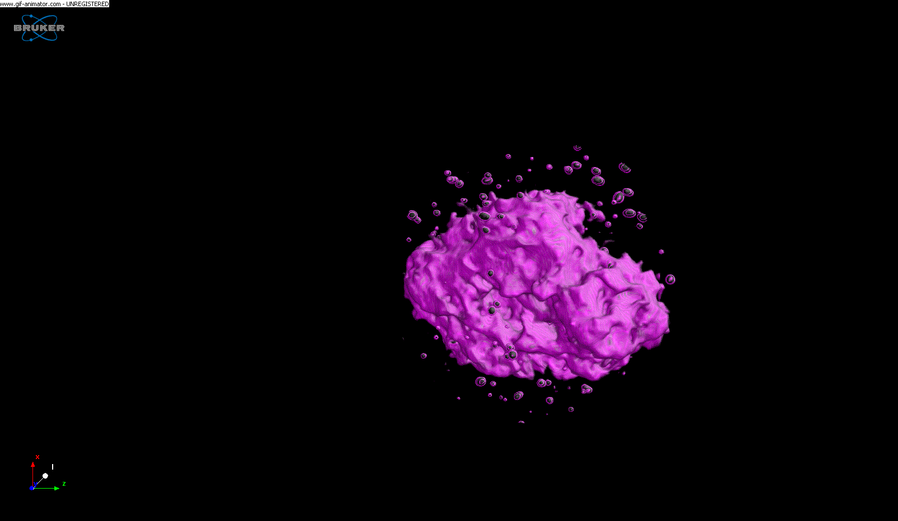
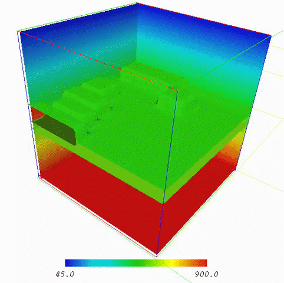

|
|
Tom
Foster
Professor of Metamorphic
Petrology
School of Earth, Environment, & Sustainability
The University of Iowa
Iowa City, Iowa 52242t
Education
Ph.D., The John Hopkins University
M.A., The John Hopkins University
B.A., University of California, Santa Barbara
Contact Info
Office: 36A TH
Phone: 319-335-1801
E-mail: tom-foster@uiowa.edu
Research Interests
Metamorphic petrology, high temperature reaction kinetics and material transport,
metamorphosed ore deposits, structural geology, field
mapping, application of mathematical models and computer
techniques to geology,
|
Courses
Spring 2027
SEES:1400 Natural
Disasters
SEES:3510 Igneous & Metamorphic Petrology
Projects
3D Metamorphic Textures

Metamorphic Kinetics
Thermal Models of Metamorphism (movie from Barb Dutrow LSU)

|
|